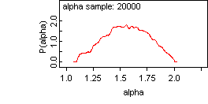
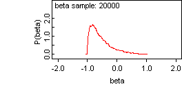
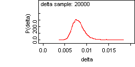
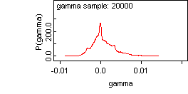

![[abbey0]](abbey0.bmp) Abbey National: A stable
Abbey National: A stabledistribution
Buckle considers the price of Abbey National shares on 50 conscutive working days. He models the price return using a stable distribution with unknown parameters. We run two chains for 1100 iterations with the thin box in the update tool set to 10. Our results are in fair agreement with Buckle who estimated the following mean values alpha = 1.61, beta = -0.55, gamma = 0.00053 and delta = 0.0079.
model{
for(i in 2 : N){
z[i] ~ dstable(alpha, beta, gamma, delta)
z[i] <- price[i] / price[i - 1] - 1
}
alpha ~ dunif(1.1, 2)
beta ~ dunif(-1, 1)
gamma ~ dunif(-0.05, 0.05)
delta ~ dunif(0.001, 0.5)
mean.z <- mean(z[2:50])
sd.z <- sd(z[2:50])
}
Data
list(N = 50, price = c(
296, 296, 300, 302, 300, 304, 303, 299, 293, 294, 294, 293, 295,
287, 288, 297, 305, 307, 307, 304, 303, 304, 304, 309, 309, 309,
307, 306, 304, 300, 296, 301, 298, 295, 295, 293, 292, 297, 294,
293, 306, 303, 301, 303, 308, 305, 302, 301, 297, 299)
)
Inits
list(alpha = 1.7, beta = 0.5,
gamma = 0.00029, delta = 0.0065)
list(alpha = 1.2, beta = -0.5,
gamma = 0.00029, delta = 0.0065)
Results
mean sd MC_error val2.5pc median val97.5pc start sample
alpha 1.558 0.1995 0.008487 1.17 1.56 1.923 1001 20000
beta -0.5499 0.3628 0.01235 -0.9743 -0.65 0.3909 1001 20000
delta 0.008204 0.00158 6.989E-5 0.005828 0.007991 0.0121 1001 20000
gamma 7.936E-4 0.002908 1.506E-4 -0.003841 1.917E-4 0.007961 1001 20000
